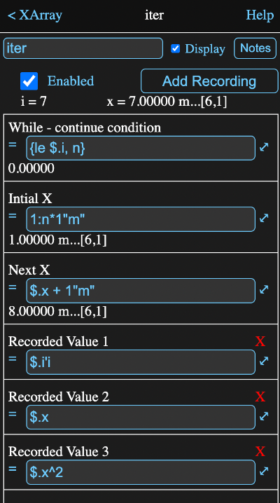

In most programing languages, loops, like the standard C "for" loop:
for (int i = 0; i < last; i++)
are commonly used in array and matrix computations, as well as for iterative solutions.
Math Minion's array and matrix handling, along with its solvers, remove almost all need for such iterative devices. However there are some circumstances where being able to loop through a series of calculations is still useful.
Various forms of case studies are probably the most common, but there could be iterative problem solutions that can't be completely handled by the built in solvers.
Like the C loop mentioned above, the Math Minion iterator allows you to initialize a value, check if the loop should continue and perform some operation before the next check.
There are actually two loop variables in Math Minion's iterator:
You can also add recorded values, whose formulas are evaluated on each loop. The resulting values added to the end of an array.
These arrays can be accessed as parameters r1, r2, etc. The parameters 1, 2, etc. will return the last value of the recorded array. That is the value calculated on the previous loop. A scalar 0 would be returned if it is the first loop.
If you supply a name as a comment to the recorded value formula (that is have a single quote followed by a name at the end of the formula), then you can use that name as a reference to the recorded value array, rather than the more cryptic R1, R2 etc.
Below is an image of the information view for a rather silly iterator example from the Getting Started session.
Notes on the fields:
Turning this on causes the iterator to perform its iterations.
Once the iteration is complete, any changes to values that the formulas below use will cause the iterator to set X to the Initial X value, set i to 1 and start the iteration over.
When this is turned off, the loop is set to its initial conditions, but does not iterate.
If an error of any kind is encountered, this will automatically be turned off.
Tapping this adds a row to the bottom of the Recorded Values section of the table below.
The formula entered into this row will be evaluated on each step and the results stored.
These results can be accessed as a iterator parameter. These arrays are named R1, R2 etc.
If the recorded value formula has a name appended as a comment string (i.e. a single quote and a name), then that name can also be used as a parameter name to access the results.
If the recorded values at each step are themselves arrays or matrices, then when accessed, a matrix will be returned with each row being the recorded step array or unwound matrix.
The loop will continue as long as this formula evaluates to a known value, whose first element (i.e. row = 1, column = 1) is non-zero.
If this condition is satisfied, the i value will be incremented and the Next X formula will be evaluated.
This formula can access the i parameter (i.e. $.i) and, assuming there are formulas for Initial X and Next X, the X parameter (i.e. $.x).
In the example image above, the condition:
{le $.i, n}
is true while i is less than the value of the expression tool n, which happens to have a value of 6. Note that the current value of i when the iteration is complete is 7 and hence the while condition is false.
The initial value for loop variable X. This formula is optional and can be blank. The value does not have to be a scalar and in the example its formula will yield an array of the integers from 1 to 6, with a unit of metres.
Following each successful evaluation of the While formula, this formula is evaluated and the result assigned to X. In the example 1 is added to every value of the preceding X array.
There is a row for each recorded value formula that has been added (see the Add Recorded button above).
These formulas will be evaluated on each iteration and the newly calculated value will be added as a row to the corresponding parameter.
Tap on the red X on the right to delete a recorded value.
Parameters that can be accessed in the form a.b where a is the tool and b is the parameter